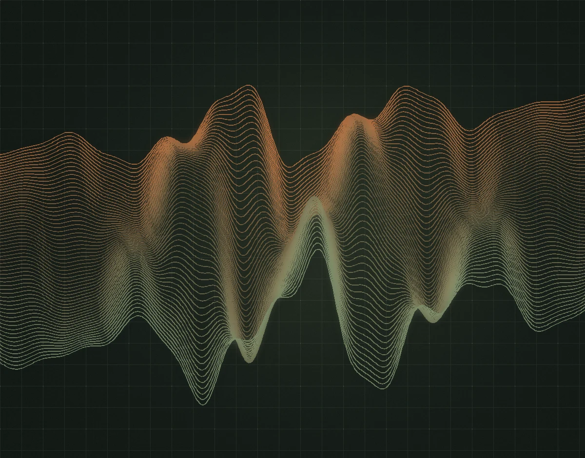

BSc thesis · Sharif University of Technology
Persian full-duplex speech
A streaming voice assistant that keeps listening during playback, with a measured cascade and an experimental direct speech route.

- 431 ms
- p90 browser-loopback latency on 201 scripted turns
- 6,754
- conversation pairs in the original audited corpus
- 3.15 / 4
- mean relevance on the 40-row automatic final test
Question
How can a Persian voice assistant respond promptly and let a user interrupt while it is speaking? I compared a modular streaming cascade with parameter-efficient adaptation of a direct speech-to-speech model.
What I built
The cascade streams browser microphone audio to NeMo ASR, Qwen3-4B, and Persian Piper. Speculative endpointing starts work early. During double-talk, playback ducks first, then lexical confirmation rejects echoes and short backchannels. The interruption can stop the current reply and carry into the next turn.
What the experiments showed
In the repository closeout, the automated browser loopback measured 372 ms mean and 431 ms p90 across 201 scripted turns on an H100. The p90 was 473 ms when the browser’s reported audio output latency was included. On a separate 40-row, source-session-disjoint panel, 240 blinded LLM-judge calls scored mean relevance at 3.150 out of 4 for the cascade and 1.425 for the frozen Qwen2.5-0.5B baseline. The original corpus comprised 6,754 pairs across 162 source sessions and yielded roughly 108.6 hours of Piper-derived stereo training audio.
Limits and decision
The loopback used a software audio path and an H100 with measured memory use. The human listening study remained unrun. Direct Moshika adaptation reduced training text loss, while all four evaluated v6.2 checkpoints passed zero of nine direct runtime rows. A later phoneme experiment improved the runtime count but still yielded unintelligible speech. I retained the cascade.